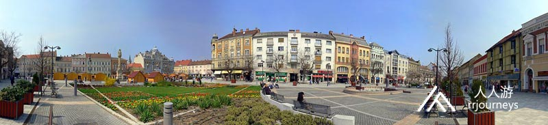
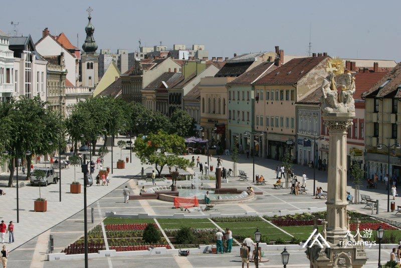
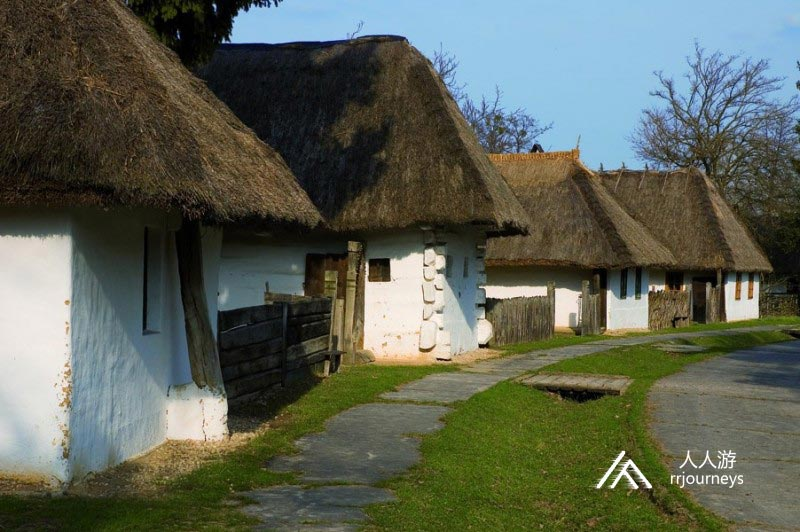
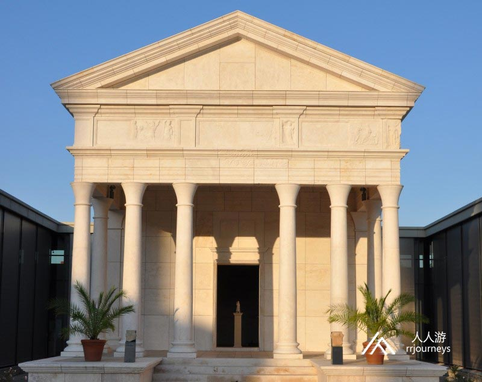

特色旅游
1日游
2-4日游
5-10日游
精品长线旅游
地址：匈牙利 布达佩斯 Budapest-Keleti, 1087
电话：0036-30-9574162
邮件：rrjourneys@gmail.com
网站：http://www.rrjourneys.com
【美景】
匈牙利最古老的城市之一的松博特海伊建于公元48年，是匈牙利第十大城市。 松博特海伊主广场每周六举行集市，故而得名松博特海伊（根据匈语星期六的发音）。 露天民族志博物馆是匈牙利第二座露天博物馆。
Goulash牛肉炖汤
Libamáj 鹅肝
Lángos特色油饼
Toltott Kaposzta 圆白菜肉丸
Halászlé 鱼汤
Ujhazi Tyukhuslevesi 家常老鸡汤
Kurtoskalacs 烟囱卷面包
Egri Bikavér埃格尔公牛血葡萄酒
松博特海伊
松博特海伊是松博特海伊主教管区和州政府的所在地，是匈牙利西部的一个重要城市，人口8.6万，邻近奥地利边境。它建于公元48年，是匈牙利最古老的城市之一，重要铁路枢纽。它是阿尔卑斯山麓人口最多的居民点。沃什县人口的四分之一以上居住在松博特海伊。这里曾是古罗马时代的城市中心，大道宽阔，地方总督府和纪念圣奎奴什建的镶嵌大教堂。大教堂修缮后，最有特色的一部分是用1784年的壁画和原雕塑表现的断垣残壁的萨沃里亚旧城，是展示了十八世纪末生活文化的一个博物馆。 亚克教堂不仅是本地区，也是阿尔巴德时期匈牙利最重要的教堂之一。这座建于十三世纪的所谓恩主教堂呈长方形，里面一正二侧大厅，西边有一对尖塔，尖塔内设有恩主的边座。在举行仪式时，地主及其家眷在这里就座，他们甚至把家里的文书及贵重物品都保存在这里。圣坛上还有教堂的命名人圣捷尔吉的画像。1256年，亚克教堂竣工后，工匠们都去了维也纳。斯蒂芬大教堂的大门是他们雕刻的。亚克教堂可算是一个过渡时期的风格，介于浪漫派和哥德派之间的风格。  景点：圣母大教堂 圣母大教堂是松博特海伊教区主教堂，它是匈牙利最大的圣母大教堂，建于1791年至1814年之间，新古典主义巴洛克晚期风格。1777年的玛丽亚·特里萨六世在与教皇庇护达成协议后，将这座城市提升为主教座席。 大教堂的风格是古典巴洛克风格，其平面图形成了一个拉丁十字架。它的长度为78.70 m，横向的宽度为38 m，纵向的宽度为24 m。内部高度为28 m，包括塔在内的外部高度为62.5 m。它可以容纳5,000人。教堂立面的下部被四个巨大的托斯卡纳柱所分隔，上部被四个离子柱所分隔，上部冠有三角山雀。在山的右侧是带钥匙的圣彼得，左侧是带剑的圣保罗，顶部有两个孩子坐着，女性形象是信仰，希望和爱的体现。这些雕塑于1796年被放置在山墙上。该建筑曾多次重新装修。2015年对外墙和塔楼进行了重新装修，修复了石材表面，整理了底座，还更新了塔楼。12月13日，圣马丁禧年翻新的正门开幕。青铜门的盒子描述了圣马丁生活中的事件。 圣母大教堂是松博特海伊教区主教堂，它是匈牙利最大的圣母大教堂，建于1791年至1814年之间，新古典主义巴洛克晚期风格。1777年的玛丽亚•特里萨六世在与教皇庇护达成协议后，将这座城市提升为主教座席。 大教堂的风格是古典巴洛克风格，其平面图形成了一个拉丁十字架，它的长度为78.70 m，横向的宽度为38 m，纵向的宽度为24 m，内部高度为28 m，包括塔在内的外部高度为62.5 m。它可以容纳5,000人。教堂立面的下部被四个巨大的托斯卡纳柱所分隔，上部被四个离子柱所分隔，上部冠有三角山雀。在山的右侧是带钥匙的圣彼得，左侧是带剑的圣保罗，顶部有两个孩子坐着，女性形象是信仰，希望和爱的体现。这些雕塑于1796年被放置在山墙上。该建筑曾多次重新装修。2015年对外墙和塔楼进行了重新装修，修复了石材表面，整理了底座，还更新了塔楼。12月13日，圣马丁禧年翻新的正门开幕。青铜门的盒子描述了圣马丁生活中的事件。
松博特海伊主广场是松博特海伊的中心，这是游客游览，散步和聚会场所。2006年翻新期间，广场收到了新的立面，长凳和喷泉，但中世纪的平面图没有改变。广场的西侧是圣三一雕像，该雕像是为了纪念1811年瘟疫的受害者而竖立的。与纪念柱相反，花坛旁边是带有雕塑群的城市喷泉，离喷泉不远的是著名小说《尤利西斯》的作者詹姆斯·乔伊斯的雕像，这是雕塑家加博尔·韦雷斯的一项有趣而非凡的作品，它停在房屋墙壁的一半，并靠在手杖上。走在大广场上，巴洛克时代和折衷主义时代的房屋交替出现。  塞格迪庄园位于13号，在1784年至86年之间建造的最古老的建筑。7号房屋建于1860年左右。建筑物的楼梯上竖立着巴洛克风格的圣弗洛里安雕像，在它旁边的8号房里经营着圣灵药房。沿着15号路走下去，您可以看到不拘一格的格林主教旅馆的建筑，其历史可以追溯到19世纪。在广场上25号的巴洛克风格的房屋的外墙边上，我们可以欣赏1820年左右的雕像。蛇药房的建筑可见于31号，该药房的宏伟家具具有新艺术运动风格的特征，由于其独特性而受到保护。
景点：露天民族博物馆 露天民族志博物馆于1973年开放，是匈牙利第二座露天博物馆。它恢复旧村落的氛围，有些房屋建在封闭的环境中，就像一条街道，另一部分则以传统的分散定居点的典型方式布置，相距较远。露天展览的主要部分是村庄的主要街道。我们可以找到贫苦农民，富裕农民和贵族的房屋，带有耙子的房屋，绿篱和填充墙。他们展示了19世纪生活的方式，村庄中心是1800年竖立的巴洛克式法庭教堂的复制品。露天博物馆饲养了动物和植物。该村的葡萄园里种了老葡萄树，苗圃里种了果树。该博物馆还举办传统的手工艺品展示，并在4月的圣乔治日博览会和11月的圣马丁日博览会上举世瞩目。  景点：斯瓦利遗址 斯瓦利遗址是罗马前身。琥珀路是当今匈牙利境内最早的罗马人定居点。从2世纪开始它就是宗教中心。罗马人之前的凯尔特时代，铁器时代埃拉维斯堪和部落就居住在此地区。潘诺尼亚的主要贸易路线和琥珀路的市区要位，促使罗马人先在这里建立马匹和马车交流道，然后再建立一座城市。由于士兵和商人的不断定居，定居点越来越多。1955年在松博特海伊发现了一座大理石雕刻和埃及女神伊希斯教堂的遗迹，具有独特的意义。 
6天5夜乌克兰小众深度游
7天6夜克罗地亚、波黑小众
5天4夜波兰、斯洛伐克小众
四天三夜奥地利、斯洛文尼亚
匈牙利最大的滑雪场一日游
6天5夜，奥地利滑雪自由行
7天6夜，奥地利旅游滑雪自
4天3夜，奥地利滑雪自由行
Copyright 2020 www.rrjourneys.com
人人游 旅游官方网站 版权所有 All Rights Reserved